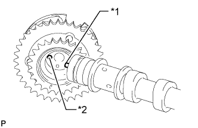
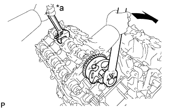
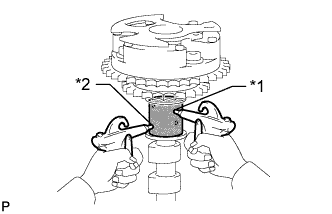
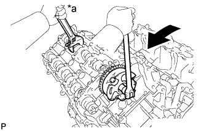
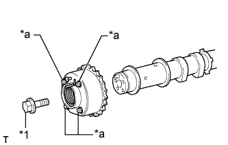
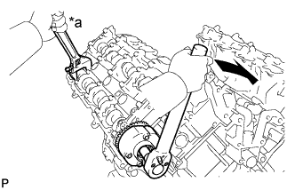
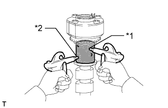
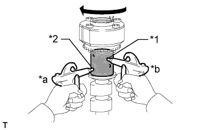
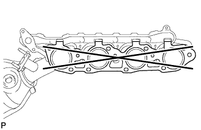

ENGINE UNIT > INSPECTION |
| 1. INSPECT CYLINDER HEAD SET BOLT |
 |
Using a vernier caliper, measure the length of the cylinder head set bolt from the seat to the end.
| *1 | Measurement Length |
| *2 | Distance |
Using a vernier caliper, measure the diameter of the elongated threads around the point indicated in the illustration.
| Item | Specified Condition |
| Intake side bolt | 103 mm (4.06 in.) |
| Exhaust side bolt | 108 mm (4.25 in.) |
| 2. INSPECT NO. 1 VALVE ROCKER ARM SUB-ASSEMBLY |
Turn the roller by hand to check that it turns smoothly.
If the roller does not turn smoothly, replace the No. 1 valve rocker arm sub-assembly.
| 3. INSPECT VALVE LASH ADJUSTER ASSEMBLY |
Place the valve lash adjuster into a container full of new engine oil.
| *1 | Taper Part |
| *2 | Plunger |
| *3 | Low Pressure Chamber |
| *4 | Check Ball |
| *5 | High Pressure Camber |
Insert SST tip into the valve lash adjuster plunger and use the tip to press down on the check ball inside the plunger.
Squeeze SST and the valve lash adjuster together to move the plunger up and down 5 to 6 times.
Check the movement of the plunger and bleed air.
After bleeding the air, remove SST. Then try to quickly and firmly press the plunger with your fingers.
| 4. INSPECT CAMSHAFT SUB-ASSEMBLY |
Inspect the camshaft runout.
Place the camshaft on V-blocks.
Using a dial indicator, measure the circle runout at the center journal.
Using a micrometer, measure the cam lobe height.
| Item | Specified Condition |
| Intake | 44.291 to 44.441 mm (1.744 to 1.750 in.) |
| Exhaust | 44.196 to 44.346 mm (1.740 to 1.746 in.) |
| Item | Specified Condition |
| Intake | 44.241 mm (1.742 in.) |
| Exhaust | 44.146 mm (1.738 in.) |
Using a micrometer, measure the journal diameter.
| Item | Specified Condition |
| No. 1 journal | 29.956 to 29.970 mm (1.1793 to 1.1799 in.) |
| Other journals | 25.959 to 25.975 mm (1.0220 to 1.0226 in.) |
| 5. INSPECT CAMSHAFT TIMING GEAR ASSEMBLY |
Install the camshaft bearing cap (Click here).
Install the camshaft housing (Click here).
Apply a light coat of engine oil to the camshaft and camshaft timing gear.
|  |
Using the hexagonal portion of the camshaft, align the knock pin of the camshaft with the pin hole of the camshaft timing gear and install the camshaft timing gear.
| *1 | Knock Pin |
| *2 | Pin Hole |
 |
| *1 | Flange Bolt |
| *2 | Straight Pin |
| *a | Do not remove |
Apply a light coat of engine oil to the threads and under the head of the bolt.
|  |
Using a wrench to hold the hexagonal portion of the camshaft, install the camshaft timing gear flange bolt.
| *a | Hold |
 | Turn |
Remove the camshaft bearing cap (Click here).
Check the lock of the camshaft timing gear.
Clamp the camshaft in a vise and confirm that the camshaft timing gear is locked.
 |
Release the lock pin.
| *1 | Advance Side Path |
| *2 | Retard Side Path |
| *a | Open |
| *b | Close |
 | Vinyl Tape |
Clean the cam journal with non-residue solvent.
Cover the 4 oil paths of the cam journal with vinyl tape as shown in the illustration.
Break through the tape over the advance side path. Then break through the tape over the retard side path on the opposite side of the advanced side path as shown in the illustration.
|  |
Apply compressed air at approximately 200 kPa (2.0 kgf/cm2, 29 psi) to the two paths accessible through the holes in the tape.
| *1 | Advance Side Path |
| *2 | Retard Side Path |
 |
Check that the camshaft timing gear revolves in the advance direction when reducing the air pressure applied to the retard side path.
| *1 | Advance Side Path |
| *2 | Retard Side Path |
| *a | Decompress |
| *b | Hold Pressure |
When the camshaft timing gear reaches the most advanced position, release the air pressure from the retard side path and advance side path in that order.
Check for smooth rotation.
Turn the camshaft timing gear within its movable range (21°) 2 or 3 times, but do not turn it to the most retarded position. Make sure that the gear turns smoothly.
Check the lock in the most retarded position.
Confirm that the camshaft timing gear becomes locked at the most retarded position.
Install the camshaft bearing cap (Click here).
Install the camshaft housing (Click here).
|  |
Hold the hexagonal portion of the camshaft with a wrench and loosen the flange bolt.
| *a | Hold |
| Turn |
Remove the camshaft bearing cap (Click here).
Remove the flange bolt and camshaft timing gear.
| 6. INSPECT CAMSHAFT TIMING EXHAUST GEAR ASSEMBLY |
Install the camshaft bearing cap (Click here).
Install the camshaft housing (Click here).
Apply a light coat of engine oil to the camshaft and camshaft timing exhaust gear.
 |
Using the hexagonal portion of the camshaft, align the knock pin of the camshaft with the pin hole of the camshaft timing exhaust gear and install the camshaft timing exhaust gear.
| *1 | Pin Hole |
| *2 | Knock Pin |
|  |
| *1 | Flange Bolt |
| *a | Do not remove |
Apply a light coat of engine oil to the threads and under the head of the bolt.
|  |
Using a wrench to hold the hexagonal portion of the camshaft, install the camshaft timing exhaust gear flange bolt.
| *a | Hold |
| Turn |
Remove the camshaft bearing cap (Click here).
Check the camshaft timing exhaust gear lock.
Make sure that the camshaft timing exhaust gear is locked.
 |
Release the lock pin.
| *1 | Advance Side Path |
| *2 | Retard Side Path |
| *a | Open |
| *b | Close |
| Vinyl Tape |
Cover the 4 oil paths of the cam journal with vinyl tape as shown in the illustration.
Break through the tape over the advance side path. Then break through the tape over the retard side path on the opposite side of the advanced side path as shown in the illustration.
|  |
Apply compressed air at approximately 200 kPa (2.0 kgf/cm2, 29 psi) to the two paths accessible through the holes in the tape (the advance side path and retard side path).
| *1 | Advance Side Path |
| *2 | Retard Side Path |
|  |
Check that the camshaft timing exhaust gear turns in the retard direction when reducing the air pressure applied to the advance side path.
| *1 | Advance Side Path |
| *2 | Retard Side Path |
| *a | Hold Pressure |
| *b | Decompress |
When the camshaft timing exhaust gear moves to the most retarded position, release the air pressure from the advance side path, and then release the air pressure from the retard side path.
Check for smooth rotation.
Turn the camshaft timing exhaust gear within its movable range (18.5°) 2 or 3 times, but do not turn it to the most advanced position. Make sure that the gear turns smoothly.
Check the lock at the most advanced position.
Make sure that the camshaft timing exhaust gear becomes locked at the most advanced position.
Install the camshaft bearing cap (Click here).
Install the camshaft housing (Click here).
 |
Hold the hexagonal portion of the camshaft with a wrench and loosen the flange bolt.
| *a | Hold |
| Turn |
Remove the camshaft bearing cap (Click here).
Remove the flange bolt and camshaft timing exhaust gear.
| 7. INSPECT NO. 1 CHAIN SUB-ASSEMBLY |
Using a spring scale, pull the chain with a force of 147 N (15 kgf, 33.1 lbf) as shown in the illustration.
| *1 | Measurement Area |
Using a vernier caliper, measure the length of 15 pins.
| 8. INSPECT NO. 2 CHAIN SUB-ASSEMBLY |
Using a spring scale, pull the chain with a force of 147 N (15 kgf, 33.1 lbf).
Using a vernier caliper, measure the length of 15 pins.
| 9. INSPECT CRANKSHAFT TIMING SPROCKET RH |
Wrap the chain around the sprocket.
Using a vernier caliper, measure the sprocket diameter with the chain.
| 10. INSPECT CRANKSHAFT TIMING SPROCKET LH |
Wrap the chain around the sprocket.
Using a vernier caliper, measure the sprocket diameter with the chain.
| 11. INSPECT NO. 1 CHAIN TENSIONER ASSEMBLY |
Move the stopper plate upward to release the lock.
| *1 | Stopper Plate |
| *2 | Plunger |
Push the plunger and check that it moves smoothly.
If necessary, replace the No. 1 chain tensioner assembly.
| 12. INSPECT NO. 2 CHAIN TENSIONER ASSEMBLY |
Check that the plunger moves smoothly.
Measure the worn depth of the chain tensioner.
| *1 | Depth |
| 13. INSPECT NO. 3 CHAIN TENSIONER ASSEMBLY |
Check that the plunger moves smoothly.
Measure the worn depth of the chain tensioner.
| *1 | Depth |
| 14. INSPECT CHAIN TENSIONER SLIPPER LH |
Measure the worn depth of the chain tensioner slipper.
| *1 | Depth |
| 15. INSPECT CHAIN TENSIONER SLIPPER RH |
Measure the worn depth of the chain tensioner slipper.
| *1 | Depth |
| 16. INSPECT NO. 1 CHAIN VIBRATION DAMPER LH |
Measure the worn depth of the chain vibration damper.
| *1 | Depth |
| 17. INSPECT NO. 1 CHAIN VIBRATION DAMPER RH |
Measure the worn depth of the chain vibration damper.
| *1 | Depth |
| 18. INSPECT EXHAUST MANIFOLD ASSEMBLY LH |
|  |
Using a precision straightedge and feeler gauge, measure the warpage of the contact surface of the cylinder head.
| 19. INSPECT EXHAUST MANIFOLD ASSEMBLY RH |
Using a precision straightedge and feeler gauge, measure the warpage of the contact surface of the cylinder head.